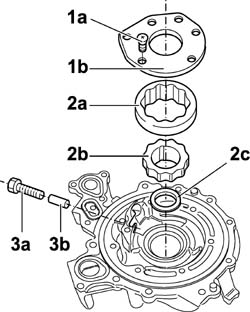
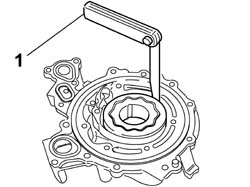
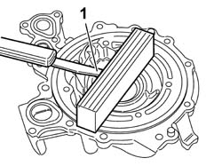

1084B18 ENGINE OIL PUMP, REMOVED - CHECK AT BENCH
- Path
- Procedures > 10 ENGINE > 1084 ENGINE LUBRICATION > 1084B ENGINE OIL LUBRICATION CIRCUIT > 1084B18 ENGINE OIL PUMP, REMOVED - CHECK AT BENCH
- Kind
- repair procedure (removal / refitting; the operation number is the code)
- Applies to
- engines: 3.0 24V V6, 2.0 16V JTD; all production periods
- Interactive page
- https://sloeber94.github.io/elrnDB-fUlss/en/#/179007169
Applies to: engines: 3.0 24V V6; all production periods
Dismantling
1. Undo the fixing bolts (1a) and remove the oil pump casing cover (1b).
2. Remove the driven gear (2a), remove the drive gear (2b), then remove the oil seal (2c).
3. Loosen the split pin (3a) and remove the oil pressure relief valve (3b).

Applies to: engines: 3.0 24V V6; all production periods
Reassembly
1. Check that the radial clearance between the driven gear and the pump casing is within the recommended limits.
Radial clearance between driven gear and pump casing (mm) | Validity |
- ÷ - |

Applies to: engines: 3.0 24V V6; all production periods
1. Check that the endfloat between the top of the gears and the oil pump cover support plane is within the recommended values.
Endfloat between top of gears and cover support plane (mm) | Validity |
- ÷ |

Applies to: engines: 3.0 24V V6; all production periods
- Check that the height of the oil pressure relief valve spring is within the recommended values.
Oil pressure relief valve spring height (mm) | Validity |
35 | |
Under a test load, (daN) | - |
- Fit the oil pressure relief valve and secure it using the clip.
- Tighten the split pin on the pressure relief valve.
- Fit the drive gear.
- Fit the driven gear.
- Fit the driven gear. - Fit the oil pump cover and tighten the fixing bolts.
Topics that link to this page (2)
- 1004E20 ENGINE - DISMANTLE AND REASSEMBLE FOLLOWING OPERATION 1004E10 - WASH AND CHECK DISMANTLED PARTS - REFIT CYLINDER HEAD AND OIL SUMP - DOES NOT INCLUDE REPAIRS TO CYLINDER HEAD AND AUXILIARY UNIT
- 1024A10 CRANK SHAFT - R + R WITH ENGINE REMOVED - CHECK MAIN AND CONNECTING ROD BEARINGAND REPLACE IF NECESSARY